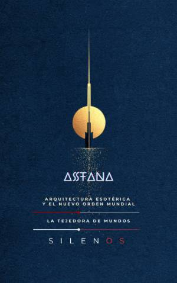

Illuminati
ASTANA: Arquitectura Esotérica y el Nuevo Orden Mundial
Sinopsis
Descubre los secretos de la metrópolis más enigmática del siglo XXI ASTANA: Arquitectura Esotérica y el Nuevo Orden Mundial es una investigación fascinante que se adentra en el corazón de la estepa de Kazajistán para desentrañar los misterios de una capital construida desde la nada. Lo que a simple vista parece una exhibición de arquitectura moderna y vanguardista, es en realidad un complejo mapa de símbolos, rituales y estrategias de poder que aspiran a reescribir la historia. ¿Qué encontrarás en este libro? El Despertar de la Estepa: Un recorrido por el rito de fundación de la ciudad, analizando cómo el diseño urbano utiliza la geometría sagrada y alineaciones astronómicas para proyectar una intención esotérica. La Ingeniería del Poder: Un análisis profundo sobre cómo el Palacio Ak Orda, la Pirámide de la Paz de Norman Foster y el colosal Khan Shatyr no son solo edificios, sino herramientas de ingeniería social y control estatal. El Sustrato Oculto: Una exploración detallada de la simbología masónica, la numerología aplicada a los rascacielos y el uso de formas arquetípicas como el domo y la esfera en el horizonte de Eurasia. Vida en el Espejismo: La cruda realidad de una ciudad de contrastes, donde el lujo de los centros comerciales y las universidades de élite convive con la periferia invisible y el desafío de sobrevivir a cuarenta grados bajo cero. Una obra indispensable para entender el futuro Desde el simbolismo del árbol de la vida en la torre Bayterek hasta los protocolos privados en el Palacio de la Paz, este libro invita al lector a un viaje por una "ciudad-laboratorio". Es una lectura esencial para arquitectos, historiadores, amantes de la geopolítica y cualquier persona interesada en descubrir cómo los mitos antiguos y la tecnología moderna se fusionan para crear los nuevos centros de mando del orden mundial. Acompaña al autor en esta exploración ética y arquitectónica sobre una metrópolis que es, a la vez, una promesa de futuro y una advertencia sobre la magnificencia del poder absoluto.